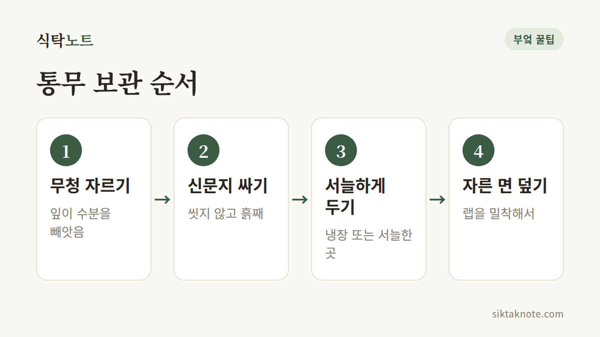

무 오래 보관하는 법 — 통무, 자른 무, 냉동까지

3줄 요약
- 무는 사 오자마자 무청(잎)을 잘라내고 신문지로 감싸 서늘한 곳이나 냉장고에 두면 좋습니다.
- 자른 무는 단면에 랩을 딱 붙여 냉장하고, 일주일 안에 쓰는 게 좋아요.
- 오래 두려면 썰어서 냉동하되, 국이나 조림 같은 익힌 요리에만 쓰시면 됩니다.

통무는 잎부터 떼어 내요
무는 덩치가 커서 냉장고에 넣기가 만만치 않죠. 그래도 몇 가지만 지키면 오래 두고 쓸 수 있습니다.
- 무청이 붙어 있다면 바로 잘라냅니다. 잎이 무의 수분을 빨아들여서 무가 푸석해지거든요.
- 흙이 묻은 무는 씻지 않고 그대로 신문지로 감싸요.
- 서늘하고 그늘진 곳에 두거나, 냉장고 채소칸에 넣습니다. 날이 더우면 냉장고가 안전해요.
무가 오래 버티기 좋은 환경은 0~4℃쯤의 서늘한 곳에 공기가 촉촉한 상태라고 알려져 있는데요. 냉장고 채소칸이 이 조건에 가깝지만 칸 안은 생각보다 건조해서, 신문지나 랩으로 한 번 감싸 수분이 날아가지 않게 해 주는 겁니다. 냉장고에서는 눕히기보다 세워 두는 쪽이 좋다고 합니다. 겨울에 베란다를 쓴다면 신문지로 싸 두되, 영하로 내려가는 날에는 얼 수 있으니 안으로 들여 주세요. 얼었다 녹은 무는 물러지기 쉬워서 맛이 떨어집니다. 같은 뿌리채소인 당근 오래 보관하는 법도 원리가 비슷해요.

쓰다 남은 무는 자른 면부터 덮어요
국에 한 토막 넣고 나면 남은 무가 애매하게 남기 마련인데요. 그럴 땐 단면부터 챙겨 주시는 게 좋습니다.
- 쓰고 남은 무는 자른 면에 랩을 팽팽하게 밀착시켜요.
- 냉장고 채소칸에 두고 일주일 안에 쓰세요.
- 오래 두면 단면이 마르고 갈라집니다. 마른 부분은 얇게 도려내고 쓰면 돼요.
이미 하얗게 마른 단면이라면 랩을 씌우기 전에 얇게 한 겹 잘라 내고 덮어 주세요. 마른 면을 그대로 두고 덮으면 그 아래에서 계속 푸석해질 수 있습니다.

남은 토막, 어디에 쓸까
무는 부위마다 맛이 달라서, 어느 쪽이 남았는지 보고 쓸 곳을 정하면 좋습니다. 잎 쪽에 가까운 윗부분은 수분이 많고 단맛이 강해서 생채나 샐러드에 어울려요. 뿌리 끝으로 갈수록 매운맛이 세지는데, 생으로 먹으면 맵지만 푹 끓이면 한결 부드러워진다고들 합니다. 그래서 아랫부분은 국이나 조림처럼 오래 끓이는 요리에 쓰기 좋아요.
더 오래 두려면 썰어서 냉동
- 국이나 찌개에 쓸 모양으로 나박나박 썰어요.
- 물기를 닦고 지퍼백에 납작하게 담아 냉동합니다.
- 쓸 때는 해동하지 말고 끓는 국물에 바로 넣어요.
냉동한 무는 물러지는 편이라 생채나 깍두기처럼 아삭함이 필요한 요리와는 맞지 않습니다. 국, 찌개, 조림에 쓰세요.
한 번에 쓸 만큼씩 나눠 담고 날짜를 적어 두면 필요한 양만 꺼내 쓰기 편합니다.
잘라낸 무청은 시래기로
무청, 그냥 버리기엔 아깝죠. 말려서 시래기로 만들 수 있습니다. 삶은 시래기는 냉동해 두고 쓰기도 해요.
"바람 들었다"는 건 이런 상태입니다
무는 수분이 많은 뿌리채소예요. 잎이 달려 있으면 잎이 숨을 쉬고 물을 내보내면서 무의 수분을 가져갑니다. 그러다 보니 오래 둔 무는 속이 스펀지처럼 푸석푸석해지기도 하는데, 이걸 "바람이 들었다"고 해요.
바람 든 무는 속이 푸석해도 먹을 수 있습니다. 다만 식감은 떨어지니 국이나 조림처럼 익히는 요리에 쓰세요.
바람이 들었는지는 잘라 봐야 알 수 있는 경우가 많은데요. 단면에 구멍이 숭숭 나 있거나 속이 하얗게 성글고, 크기에 비해 가볍게 느껴지면 바람이 든 겁니다. 무를 고를 때는 같은 크기라면 묵직한 쪽이 수분이 알차다고들 해요. 한편 잎을 붙여 두면 무의 영양이 잎으로 옮겨 간다는 말도 있는데, 무가 마르는 진짜 이유는 잎 쪽으로 수분이 날아가기 때문이라고 알려져 있습니다.
이런 무는 버려요
겉이 미끈거리거나 검은 반점이 넓게 퍼졌다면 상한 겁니다. 시큼하거나 이상한 냄새가 나도 버리세요. 신문지가 젖으면 곰팡이가 생기기 쉬우니, 젖었다면 새것으로 바꿔 주세요. 곰팡이가 보인다면 눈에 보이는 부분보다 넓게 퍼져 있을 수 있으니, 도려내고 먹기보다 버리는 쪽이 안전합니다.
자주 묻는 질문
무는 씻어서 보관해도 되나요?
흙이 묻은 채로 신문지에 싸 두는 게 좋습니다. 이미 씻었다면 물기를 완전히 닦은 뒤에 감싸 주세요. 물기가 남아 있으면 곰팡이가 생기기 쉽거든요.
통무는 냉장고에서 얼마나 두고 먹을 수 있나요?
무의 상태와 냉장고 온도에 따라 달라서 날짜를 딱 잘라 말하기는 어려워요. 자른 무는 일주일 안에 쓰는 게 좋고, 통무도 단면이 마르거나 만졌을 때 말랑하면 먼저 쓰시는 게 좋습니다.
큼직한 무 한 개도 이렇게 두면 끝까지 알뜰하게 쓸 수 있습니다.